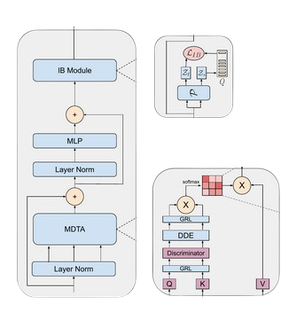

|
André Sacilotti I'm currently a senior undergraduate student in Statistics at University of São Paulo (USP). I also work as a research scientist at Visio.ai I'm pleased to be advised by Prof. Jurandy Almeida in the LaSID research group, researching about video understanding and unsupervised domain adaptation. |
{kind=link}
Research
I'm interested in computer vision and deep learning. My research primarily focuses on improving the efficiency of video understanding with minimal supervised data, such as through unsupervised domain adaptation. Collaboration: I'm always open to discussions and collaborations. Feel free to reach out to me via email or LinkedIn if you're interested. |
|

|
Transferable-guided Attention Is All You Need for Video Domain Adaptation
André Sacilotti, Samuel Felipe dos Santos, Nicu Sebe and Jurandy Almeida WACV, 2025 project page / arXiv / code & data TransferAttn is a framework for unsupervised domain adaptation (UDA) in videos that leverages Vision Transformers (ViT) by incorporating spatial and temporal transferability into a attention mechanism (DTAB). |
|
Last updated Feb 2025 | Template provided by Dr. Jon Barron |